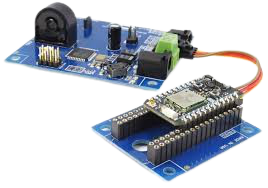

 The hardware utilized in IoT systems includes devices for a remote dashboard, devices for control, servers, a routing or bridge device, and sensors. These devices manage key tasks and functions such as system activation, action specifications, security, communication, and detection to support-specific goals and actions.
The most important part of IoT hardware is sensor as it is first in line to sense the world around it for iot device like human senses do it for human. These devices consist of energy modules, power management modules, RF modules, and sensing modules. RF modules manage communications through their signal processing, WiFi, ZigBee, Bluetooth, radio transceiver, duplexer, and BAW.
The sensing module manages sensing through assorted active and passive measurement devices. For example:-
Iot Devices around us:-IoT software addresses its key areas of networking and action through platforms, embedded systems, partner systems, and middleware. These individual and master applications are responsible for data collection, device integration, real-time analytics, and application and process extension within the IoT network. They exploit integration with critical business systems (e.g., ordering systems, robotics, scheduling, and more) in the execution of related tasks.
Data CollectionThis software manages sensing, measurements, light data filtering, light data security, and aggregation of data. It uses certain protocols to aid sensors in connecting with real-time, machine-to-machine networks. Then it collects data from multiple devices and distributes it in accordance with settings. It also works in reverse by distributing data over devices. The system eventually transmits all collected data to a central server.
Device IntegrationSoftware supporting integration binds (dependent relationships) all system devices to create the body of the IoT system. It ensures the necessary cooperation and stable networking between devices. These applications are the defining software technology of the IoT network because without them, it is not an IoT system. They manage the various applications, protocols, and limitations of each device to allow communication.
Real-Time AnalyticsThese applications take data or input from various devices and convert it into viable actions or clear patterns for human analysis. They analyze information based on various settings and designs in order to perform automation-related tasks or provide the data required by industry.
Application and Process ExtensionThese applications extend the reach of existing systems and software to allow a wider, more effective system. They integrate predefined devices for specific purposes such as allowing certain mobile devices or engineering instruments access. It supports improved productivity and more accurate data collection.